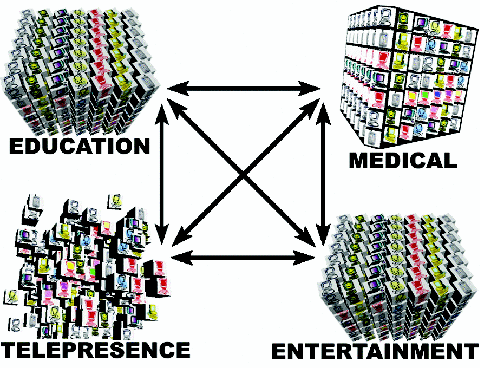

Figure 4:
Grid gateways, supported by GT4's support for resource sharing among virtual organizations, enable standalone Media Grid configurations to collaborate and share resources in a secure manner.
Back to Article